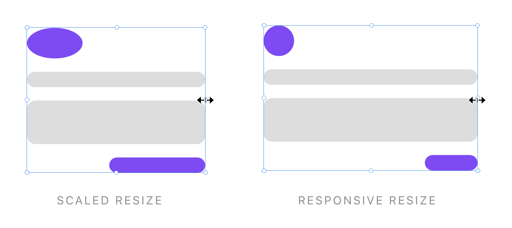
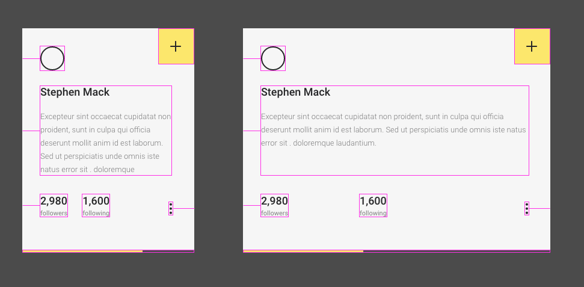

It’s hard to choose a favorite project, but one of the most complex that I’ve tackled so far was the addition of Responsive Resize to our suite of design tools.

As a UX design tool, we’re always trying to help designers do their jobs as efficiently as possible, so we try to make smart assumptions about intentions. In the case of screen design, often when people are resizing groups of objects, they’re intending to stretch it to fit new device sizes. Prior to the addition of Responsive Resize, the default resizing behavior was to stretch those objects. So we wanted to introduce Responsive Resize as a way to let designers more quickly resize their elements.

We made the decision to have this feature on by default. We did this in part for discoverability, and in part because our research suggested that this is the behavior that people would want most of the time. Since we were changing the default resizing behavior it was important to do two things well:
- It had to feel seamless and delightful.
- We had to give people a way to turn off and/or that behavior and fall back to a scaled resize behavior.
To create a seamless experience, the engineering team developed logic that predicted where objects should remain “pinned” based on their location within a group. In short - things that were aligned left would stay left, things that were aligned center would stay centered, and things that were aligned right would stay pinned to the right.

Since we wanted people to understand what was happening, I designed on-canvas decorations that allowed you to see where objects were pinned in relation to their container.
But of course there were nuances within that, so I also designed a UI in the property inspector panel that would allow you to manually set rules around where objects were pinned and if their height/width was fixed.
 All good design is ultimately in service of the person using it, so that a task is easy for them, and they understand how to do and un-do it. For us, creating a simple experience was a complex process of back-end logic, on-canvas UI, property inspector UI, and keyboard shortcuts.
All good design is ultimately in service of the person using it, so that a task is easy for them, and they understand how to do and un-do it. For us, creating a simple experience was a complex process of back-end logic, on-canvas UI, property inspector UI, and keyboard shortcuts.
Some challenges we faced:
- There are exceptions to every rule.
For instance - when you have an SVG icon, most times when you go to resize it, you don’t want Responsive Resize behavior. So we were able to recognize when an object was an SVG icon and turn off Responsive Resize by default. - An easy “off” button.
Even though you could hold down a shift modifier key to override Responsive Resize, early testing showed that people wanted a way to just opt out of the behavior altogether. So I updated the original design to include an “off” switch.
 Responsive Resize shipped in the summer of 2018, and has become one of our most relied-upon time-saving features.
Responsive Resize shipped in the summer of 2018, and has become one of our most relied-upon time-saving features.